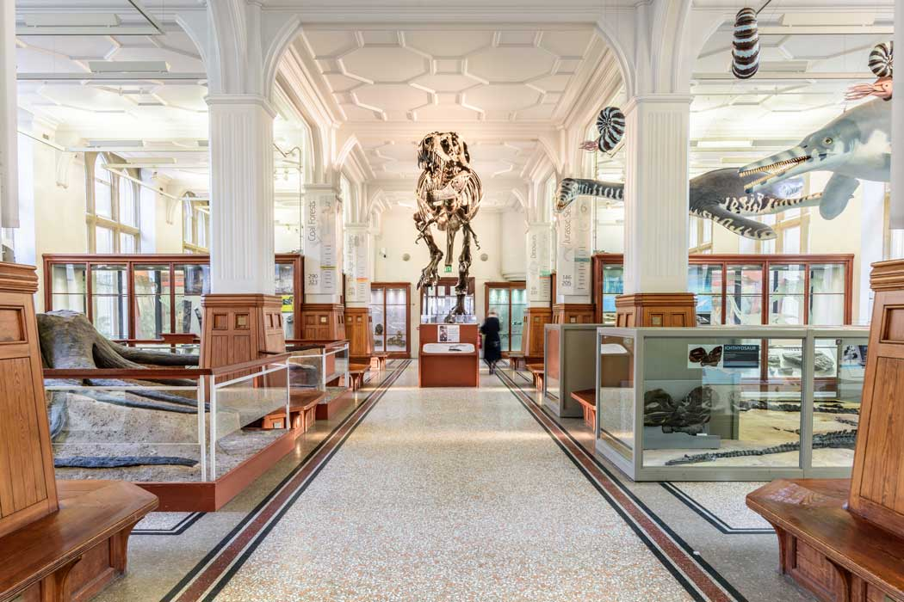

Home Trafford centre Manchester People's Museum Manchester Museum The John Library
Come learn all about people through out the ages and how they've made many advancemnts through out history!

Manchester Museum contains relics from the apst, near and far! They even have things from over 1 million years ago, back when we were cavemen! These relics are what helped us discover things from the past and showed us all how we advanced from using stone tool to the modern tools of today!
For more information, click the link below!